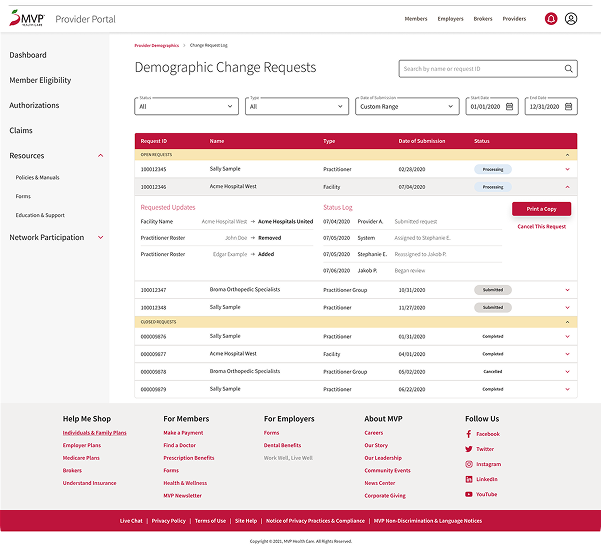
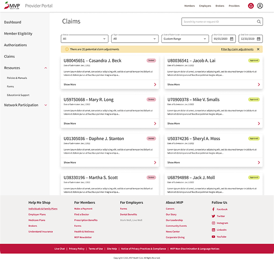
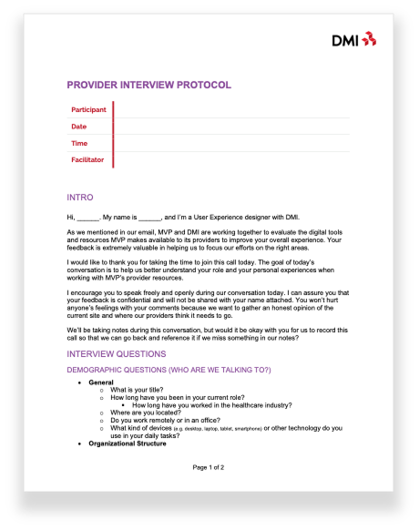
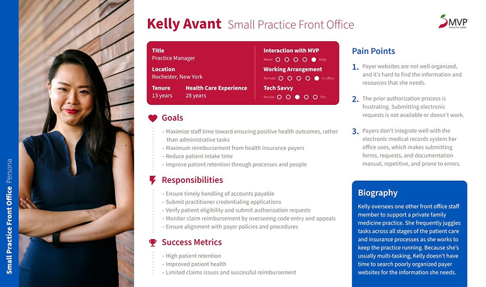
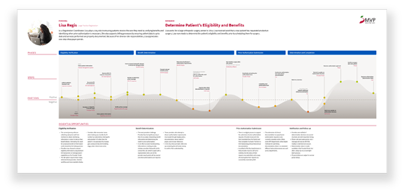
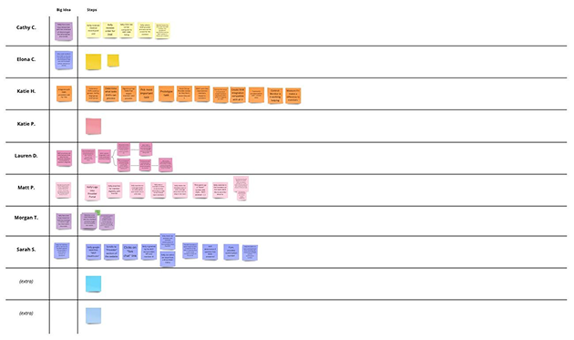
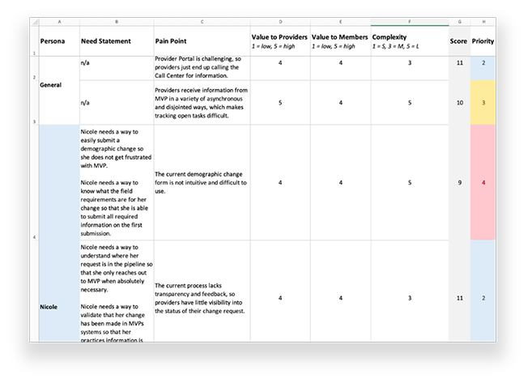
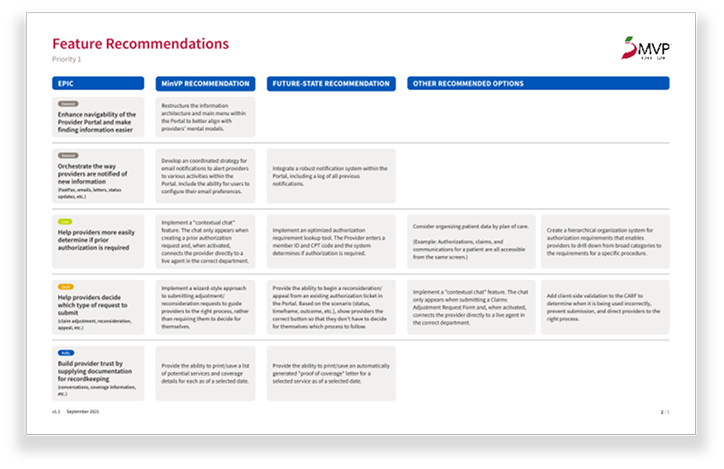
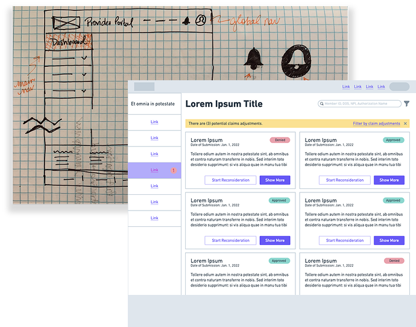

MVP HEALTHCARE
PROVIDER PORTAL
INTRODUCTION
Providers are the backbone of any health plan. But for years, MVP Health Care's provider ecosystem had gone largely underserved from a digital experience standpoint. When MVP partnered with DMI to change that, I was part of the digital strategy team brought in to understand the current state, define the future state, and lay the strategic groundwork for a transformation that would improve the experience for providers and, by extension, the members they serve.
This was a strategy and design thinking engagement at its core. No development. No final product. Just rigorous research, honest synthesis, and a clear vision for what could be.

EXECUTIVE SUMMARY

This engagement gave our team the opportunity to apply a full design thinking methodology to a previously underserved user group within MVP's ecosystem. From stakeholder interviews and provider personas to journey maps, service blueprints, and prioritized feature recommendations, we built a comprehensive strategic foundation that MVP's internal UX team could carry forward into execution.
The work we delivered didn't just outline what to build. It gave MVP the insight, the direction, and the confidence to begin a meaningful digital transformation of their provider experience.
Core Disciplines: Stakeholder Interviews, User Interviews, Provider Personas, Customer Journey Mapping, Service Blueprinting, Need Statements, Feature Recommendations, Mid-Fidelity Wireframes, Proof of Concept Design
UNDERSTAND
Getting to Know the People Behind the Process
Before we could design anything, we needed to listen. A series of stakeholder and pseudo user interviews were conducted to establish a baseline understanding of the current provider experience from both an internal employee perspective and an external provider perspective.
What emerged was a picture of a user group navigating complex workflows with limited digital support. Providers were working around gaps in the system rather than being supported by it. These interviews gave us the behavioral insights and unmet needs that would anchor everything that followed.

EMPATHIZE

Bringing the Provider Perspective to Life
With interview findings in hand, we developed a set of provider personas to synthesize the overarching themes and bring the user perspective to life for stakeholders who were not in the room during research.
Each persona captured user goals, motivations, frustrations, and behaviors in a way that made abstract research findings tangible and actionable. These personas became the shared reference point for every decision made throughout the rest of the engagement.
MAP
Visualizing the Full Journey
Stakeholders and subject matter experts participated in a multi-part workshop series where we documented persona journeys, emotional experiences, and internal processes for prioritized scenarios.
The output was a set of customer journey maps and service blueprints that captured not just what providers were doing, but how they were feeling at each step and what was happening behind the scenes to support or hinder their experience. Seeing the full picture, front stage and back stage, surfaced opportunities that would have been invisible without this level of mapping.

IDEATE

Turning Insights into Opportunities
With a clear picture of the current state and its pain points, stakeholders joined the digital strategy team for a structured ideation session. Together we brainstormed solutions for the challenges each persona faced throughout their journey with MVP.
This was one of the more energizing parts of the engagement. When stakeholders who live inside a system every day sit down with a team that has just spent weeks learning it from the outside, the ideas that emerge are often surprising and actionable in equal measure.
PRIORITIZE
Deciding Where to Invest First
Ideas were collected, organized according to the challenge they addressed, and brought back to stakeholders for review. Each pain point was scored across three dimensions: impact on providers, impact on members, and overall complexity.
This prioritization exercise gave MVP something they hadn't had before: an objective, evidence-based framework for deciding where to invest first. It removed the guesswork from roadmap planning and replaced it with a shared set of criteria everyone could stand behind.

PLAN

Building a Roadmap Grounded in Research
With priorities established, pain points were converted into epics and organized into a strategic roadmap. Each epic was accompanied by a set of possible features and both short-term and long-term recommendations from the digital strategy team.
This roadmap became the connective tissue between research and execution, giving MVP's internal UX team a clear and actionable path forward from day one.
CONCEPTUALIZE
Designing a Vision for the Future
Working from the future-state recommendations for each epic, I created mid-fidelity wireframes for Priority 1 and Priority 2 epics to illustrate what the future of MVP's provider experience could look like.
It is worth being clear about what these designs were and were not. They were intended to paint a picture of one potential future state, outline key features and components, and explore an ideal user experience. They were not completed visual designs, development-ready screens, or validated flows. They were a starting point, and an intentionally honest one.
The designs covered five key areas of the provider experience including general portal improvements, large practice credentialing, large practice registration, large practice claims adjustments, and small practice front office workflows.

CLOSING
Last Remarks
This project was a reminder that some of the most impactful UX work happens before a single pixel is pushed to production.
We didn't ship a product. We built the foundation that made it possible to ship the right product. By giving MVP a validated understanding of their providers' needs, a prioritized roadmap grounded in real research, and a conceptual vision of what the future could look like, we set their internal team up to move forward with confidence rather than guesswork.
I would have approached certain aspects of this engagement differently with more time and a larger user pool for primary research. But within the scope of what was defined, we delivered something genuinely valuable: a strategic direction that MVP could act on immediately and build upon for years.